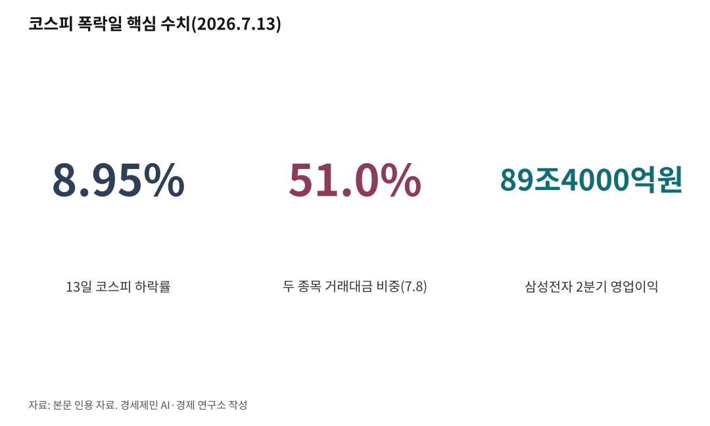

89조 버는 회사 하루 10% 폭락, 투기판 깐 금융수장 사퇴하라
같은 날 대만은 올랐고 한국만 8.95% 폭락… 두 종목이 거래대금 51% 빨아들였다
금융위는 왝더독 알고도 판 열었다… 멈출 제도 두고 45일째 "살펴보겠다"
코스피가 13일 8.95% 폭락해 6806.93으로 마감했다. 7000선이 두 달 만에 무너졌다. 삼성전자는 10.70% 내린 25만4500원, SK하이닉스는 15% 넘게 빠져 200만원선을 내줬다. 오전 10시 34분 매도 사이드카에 이어 서킷브레이커까지 걸렸다.

같은 날 대만 가권지수는 올랐다. 45,380.52로 25.91포인트(0.06%) 상승 마감했고, TSMC는 1.04% 올라 2440대만달러를 기록했다. 같은 아시아, 같은 반도체, 같은 미국발 재료였다. 한국만 무너졌다.
삼성전자의 2분기 영업이익은 89조4000억원, 세계 1위다. 이날 이 회사는 실적을 낮추지도, 수주를 잃지도, 공시를 내지도 않았다. 사흘 전엔 SK하이닉스가 미국 나스닥에 상장해 공모가보다 12.76% 오른 값으로 첫 거래를 마쳤다. 265억달러를 끌어모은 흥행이었다. 미국 투자자가 사겠다고 몰린 그 회사를 한국 시장은 오늘 15% 팔아치웠다. 회사에서 이유를 찾으면 답이 없다. 답은 회사 밖에 있다.
1. 변동성을 상품으로 만들었다
단일종목 레버리지 상장지수펀드(ETF)는 주가가 아니라 변동성을 파는 상품이다. 개별 주식 하루 등락의 2배를 좇아 오르면 두 배로 벌고 내리면 두 배로 잃는다. 변동성이 클수록 거래가 늘고, 거래가 늘수록 수수료가 붙는다. 이 상품이 잘 팔리려면 시장이 흔들려야 한다.
금융위원회가 지난 1월 도입에 착수해 4월 자본시장법 시행령을 고쳤고, 한국거래소가 규정을 손질해 5월 27일 첫 상품이 상장됐다. 명분은 고환율에 홍콩으로 빠져나간 개인 자금을 국내로 돌린다는 것이었다. 요건을 채운 종목은 삼성전자와 SK하이닉스뿐이었다.
상장 뒤 시장이 어떻게 변했는지는 거래대금이 말한다. 7월 8일 두 종목 거래대금은 24조8123억원으로, 코스피와 코스닥 전체 거래대금의 51.0%를 차지했다. 상장 직전인 5월 26일엔 30.0%였다. 한 달 반 만에 21%포인트가 뛰었다. 시장의 절반이 두 종목으로 빨려 들어갔다.
이찬진 금융감독원장은 6월 22일 "드러누워서라도 막았어야 했나 후회한다"고 했다. 하루에 주식이 몇 번이나 사고팔렸는지 보여주는 회전율이 122.5%, 심할 땐 200%까지 갔다. 이 원장은 "도박판에서 뽀찌 뜯는 사람이 제일 돈을 번다"며 증권사를 겨눴다. 극단적 회전율이 이어지면 연간 매매 수수료가 5조~10조원에 이른다는 게 그의 추산이다. 업계는 실제 발생액이 500억원 수준이라 반박했다. 어느 쪽이든 투자자의 92%는 개인이다.
변동성을 팔았더니 변동성이 왔다. 상품은 설계대로 작동했다.

2. 대만은 사는 돈을 불렀고, 한국은 파는 돈을 불렀다
대만 가권지수에서 반도체 기업 TSMC 한 종목이 시가총액의 42~44%를 차지한다. 코스피에서 삼성전자와 SK하이닉스가 차지하는 비중은 52%대다. 두 나라 모두 몇 종목에 시장 절반이 걸려 있다. 쏠림은 같다.
다른 건 그 쏠림을 다룬 방식이다. 대만 금융당국은 펀드가 한 종목에 넣을 수 있는 한도를 순자산의 10%에서 25%로 올렸다. 사서 오래 들고 있는 돈이 대형주를 더 살 수 있게 했다. 한국 금융당국은 하루 등락을 2배로 좇는 상품을 열었다. 하루 만에 청산되는 돈이 들어왔다.
13일 두 시장이 그 차이를 그대로 보여줬다. 대만 가권지수는 장중 976포인트까지 뛰어 46,330을 찍었다. 그런데 한국 증시가 7% 넘게 무너지고 서킷브레이커가 걸리자 상승분을 거의 다 반납했다. 결국 25.91포인트 오른 45,380.52로 마감했다. 대만 언론은 자국 지수가 상승분을 토해낸 원인을 한국 증시 폭락으로 지목했다. 한국은 제 시장만 무너뜨린 게 아니라 이웃의 상승분까지 깎아먹었다.
지난 7일도 같았다. 삼성 실적 발표로 코스피가 4.91% 무너진 그날, TSMC는 0.81% 빠지는 데 그쳤다. 대만 지수는 2.31% 내렸지만, 대만 언론은 그 하락도 한국발 폭락이 옮겨온 탓으로 봤다. 대만 증시는 올 상반기 60% 가까이 올라 세계 5위 시장이 됐다.
구조를 보면 더 분명하다. 미국에서 엔비디아 레버리지 상품이 나올 당시 엔비디아의 지수 비중은 2~3%였고 지금도 8% 수준이다. 삼성과 SK는 코스피200 대비 65%다. 몸통의 8%에 매단 꼬리와 몸통의 65%에 매단 꼬리는 흔드는 힘이 다르다.
그 꼬리는 국경도 넘는다. 6월 23일 코스피에서 SK하이닉스가 12.47%, 삼성전자가 12.31% 폭락하자 그날 밤 뉴욕에서 마이크론이 13.18% 떨어졌고, 미국 반도체주를 묶은 필라델피아 반도체지수가 7.87% 빠졌다. 블룸버그는 이 미국 하락이 코스피 급변동에서 촉발됐다고 봤다. 월가는 "꼬리가 몸통을 흔든다"고 했다.
3. 안정이 불안정을 낳는다
하이먼 민스키(Hyman Minsky)는 오래전에 답을 써뒀다. 시장이 오래 안정되면 사람들은 위험을 잊고 빚을 늘린다. 그 빚이 자산 가격을 밀어 올리고, 오른 자산이 다시 빚의 담보가 된다. 그러다 담보가 무너지면 모두가 동시에 팔아야 한다.
레버리지 상품이 상장된 5월 27일은 코스피가 사상 최고 구간을 달리던 때였다. 강세장의 정점에서 2배 상품이 열렸고, 빚내서 산 주식을 뜻하는 신용거래융자 잔고는 연초 27조원에서 6월 24일 38조6328억원으로 사상 최대를 찍었다.
돈이 어디서 왔는지도 드러난다. 코스닥 신용잔고는 5월 27일 9조8563억원에서 7월 9일 7조7962억원으로 2조600억원 줄었다. 중소형주를 팔아 레버리지를 산 돈이다. 그러는 사이 상장 이후 코스피와 코스닥에서 주가가 내린 종목은 2268개, 전체 상장사의 95.5%에 이르렀다.
시장이 가장 좋아 보일 때 가장 위험한 상품이 허가됐다.
4. 빚을 내지 않은 사람의 청구서
빌린 돈에 견줘 담보 가치가 정해진 선 밑으로 떨어지면 증권사가 주식을 강제로 판다. 반대매매다. 올해 일평균 반대매매는 374억원으로 지난해 100억원의 3.7배다. 상반기에만 3조1525억원이 이렇게 팔렸다. 개인이 스스로 판 게 아니라 담보 선에 걸려 기계가 판 것이다.
반대매매는 폭락 이튿날 개장 동시호가에 집행된다. 반등이 오더라도 그 수익은 이미 팔려나간 계좌의 몫이 아니다. 그런데도 오늘 개인은 1조원 넘게 사들였다. 외국인과 기관이 던진 물량을 개인이 또 받았다.
여기서 짚을 게 하나 있다. 레버리지를 산 사람은 자기 판단으로 손실을 봤다. 그런데 레버리지를 사지 않은 사람도 같은 낙폭을 맞았다. 삼성전자 본주만 들고 있던 사람, 빚을 한 푼도 내지 않은 사람이 남의 청산이 만든 하락을 그대로 받았다. 청구서는 빚을 낸 사람에게만 가지 않는다.
상품을 만든 운용사는 수수료를 벌었다. 돈을 빌려준 증권사는 이자를 벌었고, 담보가 부족해지면 반대매매로 원금을 먼저 회수한다. 시행령을 고친 당국은 아무 비용도 치르지 않는다.
5. 당국은 왝더독을 알고 있었다
이억원 금융위원장은 기자간담회에서 상품을 이렇게 설명했다. 기초자산이 오히려 상품에 휘둘리는 구조, 곧 꼬리가 몸통을 흔드는 일을 막으려고 대상 종목을 엄선했다는 것이다. 시가총액 10% 이상, 거래량 5% 이상 같은 요건을 걸었다고 했다. 위험을 몰랐던 게 아니다. 알고 있었고, 큰 종목이면 흔들리지 않으리라 여겼다. 결과는 반대였다. 지금 코스피에서 벌어지는 일이 정확히 그 꼬리가 몸통을 흔드는 장면이다.
거래를 멈출 제도는 이미 있다. 거래소는 상품 값이 실제 가치에서 크게 벌어지면 투자유의종목으로 지정해 단일가매매로 바꾸고, 그래도 정상화가 어려우면 매매거래를 정지할 수 있다. 2020년 원유 레버리지 상장지수증권 값이 실제 가치의 세 배 가까이 뛰었을 때 3거래일 거래정지를 집행한 선례가 있다. 그때 미국은 3배 레버리지 원유 상품을 아예 조기 청산했다.
발동 요건도 채워졌다. 6월 한 달 단일종목 레버리지의 괴리율 초과 공시가 57건이었다. 6월 8일엔 SK하이닉스가 8% 빠졌는데 그 종목을 좇는 상품이 되레 50% 급등해 마감하는 사고까지 났다. 정상이면 15~16% 떨어졌어야 한다. 유동성공급자가 호가를 대지 않는 장 마감 직전에 값이 튀었고, 그 값에 개인의 시장가 주문이 체결됐다.
빚의 문턱도 한국이 낮다. 미국은 신용계좌를 열려면 최소 2000달러가 있어야 하고, 닷새 안에 네 번 이상 당일 사고파는 투자자에겐 계좌 2만5000달러(약 3400만원)를 요구하며 미달하면 당일 매매를 막는다. 한국엔 단기 매매 횟수나 자산 규모로 거래를 막는 규정이 없다.
당국의 태도는 갈린다. 이찬진 금융감독원장은 효과는 별로 없고 부작용이 너무 커졌다며 후회한다고 했다. 구윤철 부총리는 보완책을 협의 중이라 밝혔다. 김용범 대통령실 정책실장은 지난 10일 시장상황점검회의에서 면밀히 살펴보겠다고 했다. 상장 45일째 나온 말이다. 반면 시행령을 고쳐 판을 깐 금융위원회는 이 상품이 시장 변동성과 크게 관련이 없다는 입장이고, 이억원 위원장은 말이 없다.
감사원은 6월 24일부터 금융위와 금감원을 상대로 투자자 보호 실태 감사에 들어갔다. 국회에선 김태년 의원이 안정화 조치가 급증했다고 지적했고, 안철수 의원은 정책적으로 완전히 실패한 상품이라며 상장폐지 검토를 요구했다. 판을 깐 당국은 같은 시기 코스닥 상장폐지 문턱은 높였다. 투기 상품은 풀고 성장기업 퇴출은 조인 것이다.
89조4000억원과 오늘의 8.95%와 괴리율 초과 57건은 같은 시점의 숫자다. 개미는 이미 값을 치렀다. 판을 깐 사람들은 아직 아무것도 치르지 않았다.
거래를 멈추는 것이 먼저다. 제도는 이미 손에 쥐고 있다. 빚내서 사는 문턱도 미국만큼은 높여야 한다. 그다음은 책임이다. 시행령을 고쳐 판을 연 금융위원장, 상장규정을 손질해 문을 연 한국거래소, 증권신고서를 수리하고도 막지 못한 금융감독원장이 그 명단이다. 물러나는 것이 순서다.
※ 이 기사는 AI 프로그램 클로드 오푸스 4.8을 활용해 작성했다.
참고문헌
· "두 달 만에 코스피 7000선 붕괴…SK하이닉스도 200만원 내줘", 파이낸셜뉴스, 2026.7.13., https://www.fnnews.com/news/202607131546349912
· "코스피, 반도체주 약세에 6%대 하락…7000선 붕괴", 뉴스핌, 2026.7.13., https://www.newspim.com/news/view/20260713000688
· "台塑、軍工聚人氣+台積電撐盤收漲25元 台股上揚25點收45,380點", 聯合新聞網, 2026.7.13., https://udn.com/news/story/7251/9624538
· "台股虎頭蛇尾！僅收漲25點 台積電收今日最低2440元", ETtoday財經雲, 2026.7.13., https://finance.ettoday.net/news/3200189
· "시장 흔든 단일종목 레버리지ETF, 대책마련 속도", 머니투데이, 2026.7.13., https://www.mt.co.kr/stock/2026/07/13/2026071219265526661
· "[단독] 금융위 레버리지 ETF, 시장 변동성과 무관…이억원 위원장 책임론 부상", 뉴데일리, 2026.7.8., https://biz.newdaily.co.kr/site/data/html/2026/07/08/2026070800070.html
· "[라이트Q] 드러누워서라도 지켜야 할 단일종목 레버리지 ETF", 아시아타임즈, 2026.7.7., https://www.asiatime.co.kr/article/20260707500403
· "김용범 레버리지ETF, 필요시 보완…시장상황점검회의서 결정", 서울경제, 2026.7.10., https://www.sedaily.com/article/20066173
· "금감원장, 단일종목 레버리지 후회…증권사 배불리는 결과만 초래", 서울경제, 2026.6.22., https://www.sedaily.com/article/20058612
· "금융당국, 단일종목 레버리지 LP 관리 강화한다", 서울경제, 2026.7.5., https://www.sedaily.com/article/20063854
· "美증시에도 삼전·SK 레버리지 ETF 영향…월가 꼬리가 몸통 흔들어", 서울경제, 2026.6.24., https://www.sedaily.com/article/20059538
· "ETF·ETN시장을 보다 건전하게 발전시키겠습니다", 금융위원회, 2020.5., https://www.fsc.go.kr/po010101/74332
· "단일종목 레버리지·인버스 상품 도입에 따른 투자자 유의사항 안내", 금융위원회, 2026.5., https://fsc.go.kr/po010101/86910
· "미국은 막고 한국은 열어뒀다…37조원 빚투 키운 신용융자 그림자", 르데스크, 2026., https://www.ledesk.co.kr/view.php?uid=16034
· "대만 TSMC 덕에 세계 5위 주식 시장으로, 한국은 7위", 서울신문, 2026.5.27.
· 김지윤·문이림, "출시 한달 반, 40% 손실도…변동성 뇌관 된 단일종목 레버리지", 헤럴드경제, 2026.7.13.
· Hyman P. Minsky, 『Stabilizing an Unstable Economy』, Yale University Press, 1986
#코스피7000붕괴 #단일종목레버리지ETF #당국책임론 #대만가권지수 #TSMC #삼성전자 #SK하이닉스 #반대매매 #신용융자 #매매거래정지 #괴리율 #민스키